Our Capabilities
Demonstrated performance across defense and federal operations.

Everything required to sustain the mission
Shelter, power, camp infrastructure, hygiene, and daily sustainment services from arrival through redeployment. Every service line scoped to the requirement, coordinated through direct COR communication, sustained through mission completion.
Service Lines
GP Medium (16x32ft), GP Large (100x40ft), and GP Extra Large (120x60ft) tent systems. All tents raised 4 inches on hard-plate composite flooring with integrated lighting every 5 feet, operational power outlets, mosquito nets, and air conditioning maintaining 68-76F. Each tent equipped with a serviceable 5lb ABC fire extinguisher. Sleeping configurations from 20 to 30 cots per tent. Full setup, maintenance, and teardown included.

Site preparation, zoned layout design coordinated to MGRS grid references, structure erection, drainage, and weatherproofing. Full decommissioning and restoration to host-nation standards upon mission completion. All exposed wiring capped with wire nuts and sealed with water-resistant material. Contractor sign-in/sign-out with COR prior to every service visit.

90kVA (72kW) and 150kVA (120kW) silent-type generators with parallel capability for continuous uninterrupted power. 5000W step-up/step-down voltage converters (110V-220V) with US-standard and universal 220V outlets. All generators individually grounded with 8-foot minimum earth rods and 3/4-inch grounding wire. Secondary containment with 2/3 organic liquid capacity, HAZMAT spill trays, spill kits, fire extinguishers, and safety disconnect switches for paralleling and synchronizing. Published daily maintenance schedule and 24-hour support.

Western-style seated chemical latrines with 45-gallon minimum holding tanks, inside locking device, ventilation, and five full rolls of toilet paper per unit. Capacity: 100-150 latrines and 50-100 handwashing stations deployable across multiple locations. Daily pump-and-recharge of chemical holding tanks, daily disinfection of all surfaces, and daily resupply of soap, paper towels, and toilet paper between 1000-1400 hours. All units staked or secured against displacement. Contractor personnel sign in/out with COR before and after every servicing.

Trailer-based portable shower units with minimum 5 shower heads per trailer, self-contained potable water storage, and greywater collection. Water temperature 85-115F at 40-60 PSI per head. Individual stalls with privacy dividers (minimum 75cm x 75cm) and non-skid flooring. Hand rails mandatory on entry stairs. Potable water maintained above 30% at all times. Grey water removed daily per local and national regulations. All lighting GFCI-protected and compliant with international building code for wet-area surfaces.

Scheduled daily waste collection with minimum 20-gallon trashcans and full-size dumpsters (278x84x73 inches). Medical waste removal including needles, syringes, and contaminated materials - transported, decontaminated, and disposed under all applicable local regulations. All required permits obtained by contractor. Minimum one scheduled medical waste pickup per week at main camp. Area restored to original condition after every pickup as verified by COR.

Collection, cleaning, and return within 24 hours. Maximum 10 items per standard-issue laundry bag (two socks count as one item). Itemized receiving receipts issued per bag. Drop-off and pickup between 1700-1900 hours unless otherwise specified. Contractor liable for missing clothing with claims settled within 24 hours of notification. All labor, management, transportation, and supplies provided.

Portable heavy-duty flood light sets with minimum 2 lamps rated for hazardous and wet locations, producing minimum 100,000 lumens. Self-contained with 8-15kW generator, fueled and maintained by contractor. Telescoping steel mast with 360-degree rotation on towable frames. 4-hour maintenance response on notification. All scheduled maintenance conducted during daytime when lights are not operational.

Folding tables (72x29x29 inches, 300lb capacity), folding chairs (19x18.5x30 inches, 300lb capacity), cots (minimum 74x40.5x23.5 inches, 300lb capacity, collapsible for storage), and 16-inch minimum pedestal fans. Standard lots: 25 tables, 100 chairs, 25 cots, 10 fans per lot. Positioned according to billeting, dining, classroom, and command-area layouts.

20-foot refrigerated containers with variable temperature for refrigeration and frozen products. Diesel-powered with dedicated generator providing 24/7 operation, compliant with MED-53. 400lb-capacity ice makers or 200lb daily ice delivery to designated grid coordinates. 4-hour maintenance response for all refrigeration equipment.

TecShipCorp provides simultaneous Malay-English interpreter services across multiple concurrent locations. Interpreters support basic logistics coordination, tactical field training, and medical training lanes. All interpreters hold industry-recognized language proficiency certification. Capable of 12-hour daily operations, 7 days per week including host-nation holidays. Presentations and briefing materials are provided in advance for preparation. Equipment setup and functionality are confirmed 30 minutes prior to performance. Contractual error rate threshold remains below 1% of total conversations.

24-hour point of contact available for all emergency requirements with guaranteed 4-hour response and support across every service line: power, hygiene, shelter, refrigeration, lighting, and medical waste. Repair or replacement of any unserviceable equipment occurs within the response window. Published daily maintenance schedules are coordinated with COR before camp operations begin. All scheduled maintenance is conducted during off-peak hours to minimize operational disruption. If maintenance personnel are not proficient in English, the contractor provides a translator at no additional cost.

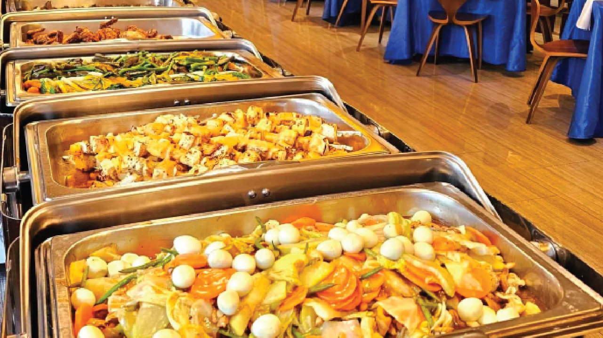
Feeding the mission
at every scale
From field-expedient meal service to full buffet-style dining. Scalable catering designed for military exercises, base camp sustainment, and government-hosted events — fully integrated into daily BLS operations.
Service Lines
All meals are prepared through contractor-operated food production systems designed to maintain consistency, sanitation, and throughput under recurring operational demand. Meal production is structured around breakfast and dinner service cycles, with western cuisine as the primary standard and local cuisine available as a secondary option when appropriate. Production planning is aligned to approved menu cycles, projected headcount, dietary restrictions, and required service windows to ensure meals are ready for dispatch without compromising food safety or delivery timing.
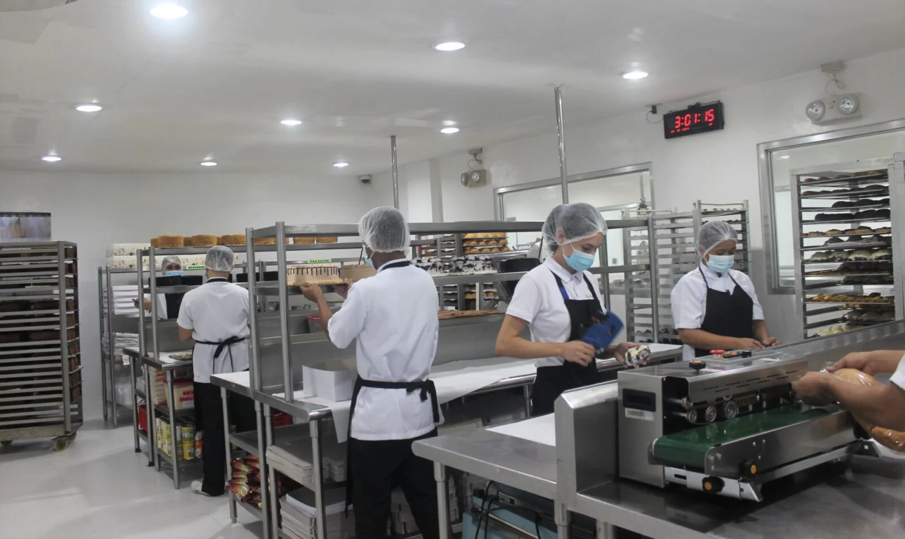
Menus are developed in advance and submitted to the COR not less than 48 hours prior to service for review, coordination, and approval. Each menu is built to satisfy caloric thresholds, meal composition requirements, vegetarian accommodation, and operational practicality in a field-supported environment. This advance coordination reduces service disruption, allows alignment with mission schedules, and ensures all feeding cycles are validated before execution.
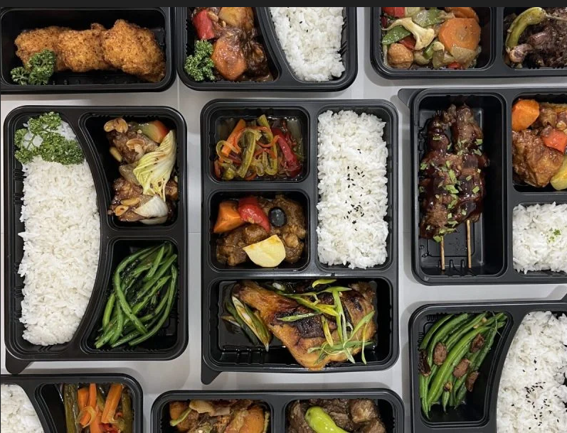
Breakfast service is executed within the required morning feeding window and structured to deliver rapid, orderly throughput for operational personnel. Standard breakfast execution includes multiple hot mains, vegetarian options, side selections, breads or pastries, fruit, and beverage service. Production and issue are managed to ensure food remains serviceable at point of delivery while supporting timely feeding before personnel movement or training cycles begin.
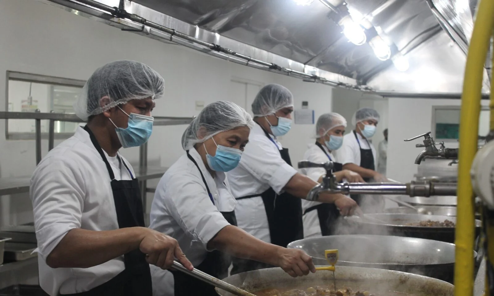
Dinner service is structured for high-volume evening feeding with controlled menu execution, line discipline, and full meal completeness. Standard dinner support includes multiple hot entrees, one vegetarian selection, side items, breads, salad components, dessert, and beverage service. Meals are prepared and delivered to maintain recovery-focused nutritional support while preserving sanitation, service quality, and timing during evening operational periods.
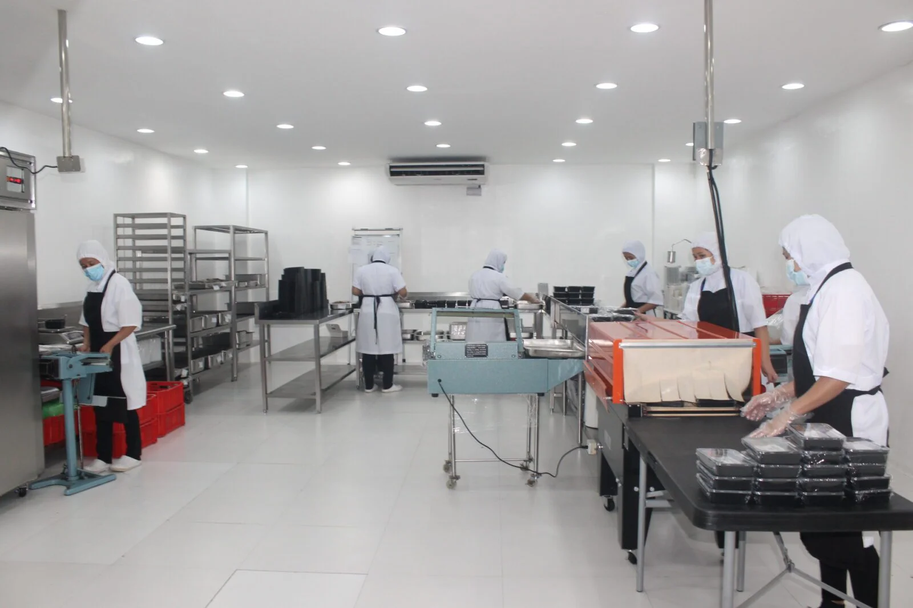
Meals are transported from contractor-operated preparation sites to designated service locations under controlled conditions intended to preserve food safety and product integrity throughout movement. Hot and cold items are managed to maintain required holding conditions during staging, transport, and service setup. Delivery sequencing is coordinated against designated meal windows and site access constraints so that food arrives ready for immediate issue without avoidable degradation in safety, temperature control, or serving readiness.
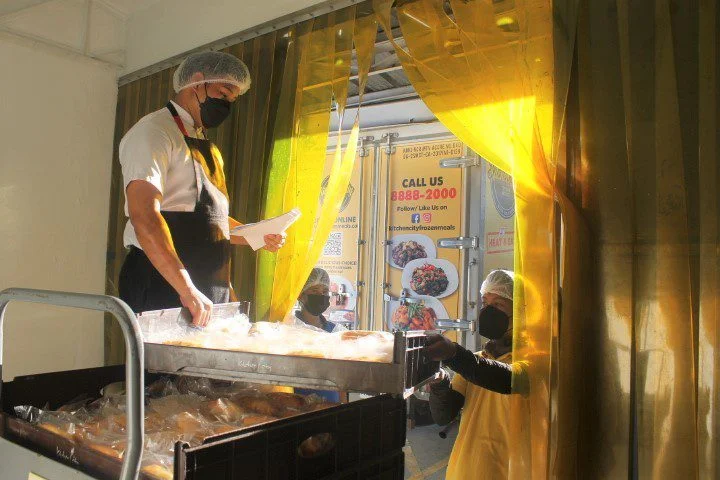
TecShipCorp provides the labor, equipment, tables, utensils, cups, napkins, condiments, and associated support necessary to execute a complete serving line operation. Service lines are organized for orderly throughput, accurate issue, and reduced congestion during peak feeding periods. Execution is designed to maintain service tempo, present complete meal components, and support government oversight at the point of service.
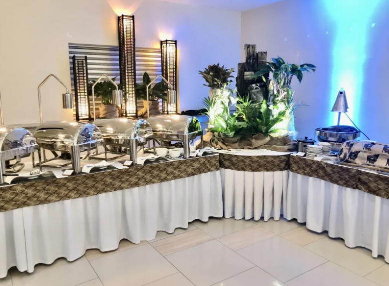
Food safety controls are enforced across the full service chain, including receiving, storage, preparation, cooking, transport, hot holding, cold holding, and final distribution. Operations are managed to reduce contamination risk, maintain temperature compliance, and prevent breakdowns in handling discipline that could compromise force health. Food is protected, dated, separated, and handled under controlled conditions, with specific attention to time/temperature control for safety, cross-contamination prevention, and exclusion of unsafe food practices.
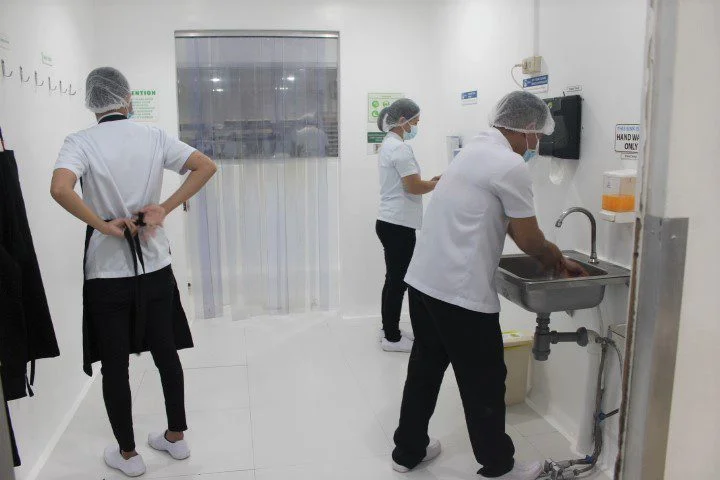
Cleaning and sanitization procedures are applied across food-contact surfaces, utensils, containers, and meal service equipment to maintain sanitary operations throughout the period of performance. Sanitizer concentrations, contact times, ware-washing methods, and surface cleaning practices are managed as active control measures rather than afterthoughts. This ensures meal production and service remain supportable under inspection and reduces the probability of foodborne illness exposure during recurring operations.
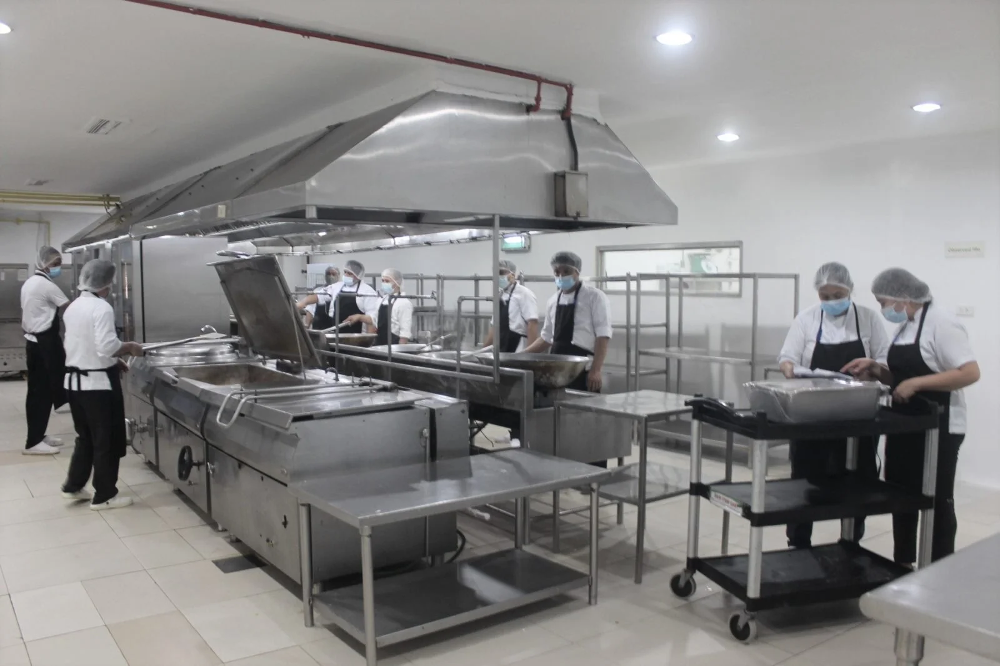
Meal operations incorporate accommodation for vegetarian requirements, declared food allergies, and religious dietary restrictions. These requirements are addressed during menu planning and service execution to ensure personnel can be fed safely without disrupting the primary feeding line or compromising contract performance. This capability is particularly important where dietary exceptions must be supported within the same service window as the main meal population.

All catering personnel operate under defined hygiene, uniform, and conduct controls appropriate to food service in government-supported environments. Hand hygiene, glove discipline, hair restraint, illness exclusion, attire compliance, and food-handling conduct are maintained as baseline operating standards. Where workforce language limitations exist, interpreter support is integrated to preserve clear communication with government representatives and prevent execution gaps at the site level.
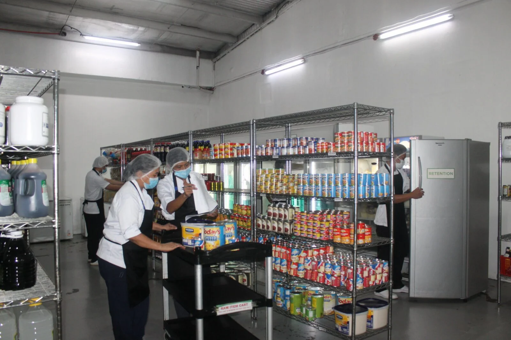
Meal issue is executed in coordination with government headcount procedures to preserve billing integrity, service accountability, and clear performance documentation. TecShipCorp supports orderly counting, controlled issuance, and signature-based coordination where required by oversight personnel. This ensures the feeding record remains auditable and aligned with actual support delivered, particularly during high-volume recurring operations.
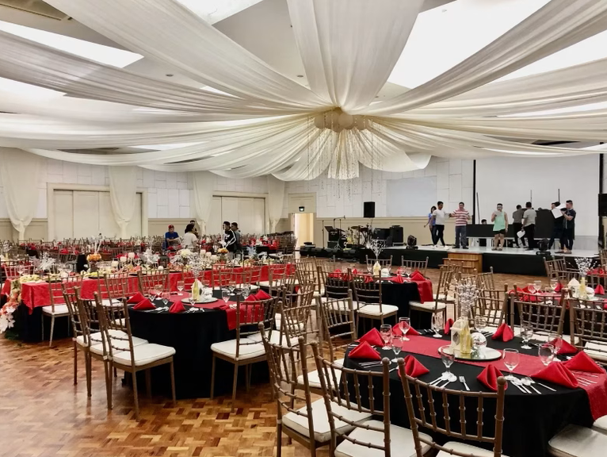
Catering performance is managed against measurable service objectives covering sanitation compliance, menu execution, serving throughput, headcount accuracy, and continuous availability of required items. Operations are maintained in a state of inspection readiness for random checks, periodic surveillance, and complaint-driven review. When deficiencies are identified, corrective action is executed within the required response window to restore compliance and prevent repeat performance failures. This approach supports confidence from the COR, protects mission continuity, and demonstrates contract execution discipline expected in military food service environments.

Base Life Support, Logistics & Operational Infrastructure.
Built for Mission Support
TecShipCorp delivers base life support, procurement coordination, and field infrastructure services for U.S. military exercises and operations in the United States, the Indo-Pacific, and other regions worldwide. From camp buildout to sustained daily operations, we provide what the mission demands — on schedule, to specification, with a clear line of coordination to your field leadership.
Learn more about our operations